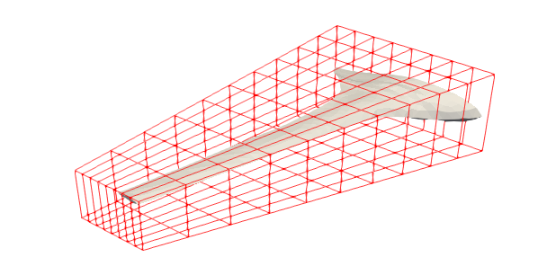
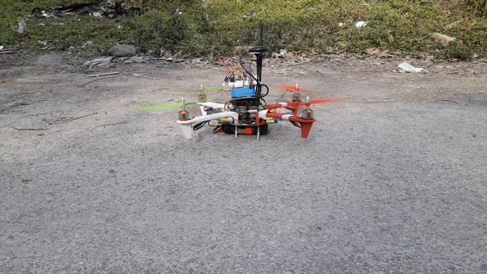
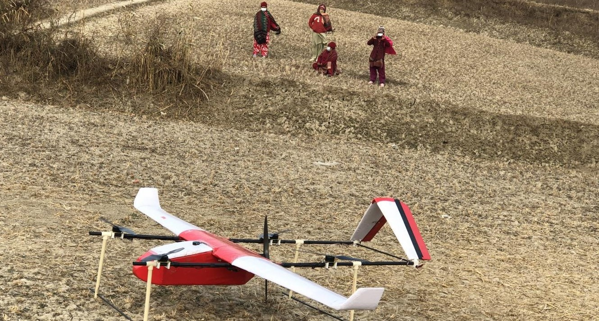
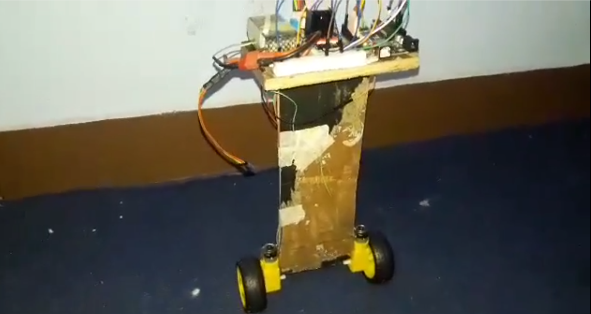
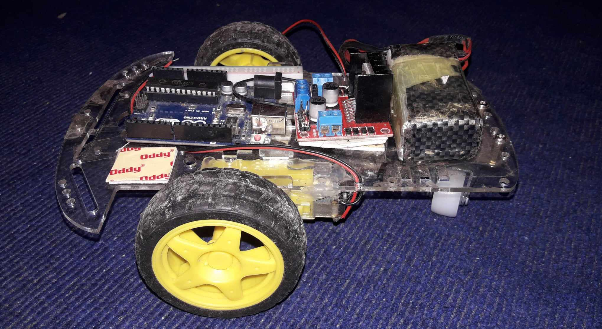

Optimization of Eagle Ray BWB UAV

Gradient based optimization of Eagle Ray BWB UAV was carried out in SU2 using Adjoint method and a non-gradient based optimizaton was carried on Aeolus using BOBYQA algorithm, resulting in surprising increment in lift/drag ratio without subsequent changes in dynamic control of the UAV.
Eagle Ray is a Blended Body Wing UAV whose initial planform and airfoil stacks were given by Mark Page, creator of the modern blended wing body (BWB) aircraft design.
We were provided with Eagle Ray version 3 by Kashmir World Foundation (KWF), which acted as a baseline for us.
Real-time data acquisition

This project aimed to collect, process, and analyze real-time data from various sensors, such as temperature, humidity, and various gas sensors.
Using the information provided, we created a 3D map of a location showing the changes in various parameters.
It used a quadcopter using Pixhawk 2.4 as flight controller hardware and PX4 as flight control software.
Using Q ground control as a control station, we set several waypoints to direct the UAV in order to get a 3D map.
Gauthali

Gauthali is a fixed-wing VTOL drone with a 60km range and 1.5kg
payload capacity, dedicated to transporting vital medical supplies, such as emergency medications, vaccines, and blood supplies,to remote Nepalese areas.
Supported by the UNICEF Innovation Fund in 2019, the drone had a successful pilot test at Tribhuvan University in February 2021.
SkyRider X

TheHarmonyRide

Bluetooth Car

It is a car based on Arduino as a microcontroller and uses a Bluetooth module to get instructions from an Android mobile phone.
Android phone uses an app that can connect with Arduino via Bluetooth. This project is my very first Arduino-based project.